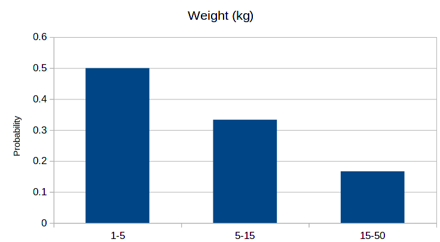
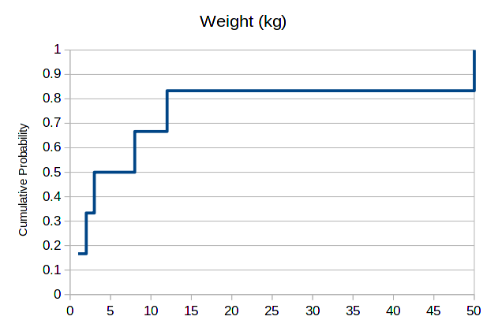

4.1 Numerical data
1 Histograms
Differently from categorical and ordered data, numerical data is continuous. That is, it’s value can be any number, and as such, it is not convenient to create bars per value. Instead, what is typical is to choose bins of data, that is, an interval between two values, and represent in the bar all values present in this interval. So, for example, for the weight data above we can do the following probability histogram:

Choosing good bins is a matter or trial and error, and is not always evident which values to choose. However, this choice can be completely circunvented if we thing about cumulative probabilities instead. In place of bars, we draw a line and obtain the following:

At each point where we have data, the cumulative probability increases. One can read it as follows: the probability of an animal in this data set having less than 10kg, or exactly 10kg equals 66%. For 50kg, we have 100%, as this is the maximum value.
2 Statistical Measurements
Every data set has distinctive characteristics, but there are some measurements that are useful very often. In the following, instead of talking about measurements as numbers, we will talk about them using x_1, x_2, x_3, ..., x_n and so on. Each one is a number, corresponding to patient 1, 2, 3, ..., n.
The most important statistical measurements are:
- Minimum: the smallest value in the data set.
- Maximum: the largest value in the data set
- Average: an intermediate value defined by:
M = \frac{x_1 + ... + x_n}{n}
- Standard deviation: a measurement of the width of the data set:
\sigma = \sqrt{ \frac{(x_1 - M)^2 + ... + (x_n - M)^2}{n} }
- Standard error: a measurement of the error when measuring the mean:
s = \frac{\sigma}{\sqrt{n}}
3 Exercise
Let’s split the classroom in two, and take the statistics above: height, shoe size.
For each one of these, we will draw histograms, cumulative histograms, and calculate the statistics above.
4 Data analysis
A data set is availabe, together with its description: Data set.
5 Control
A data set with heights is availabe here: heights. With this data set:
- Fill the statistics table at the right of the table.
- Create a histogram for the data, using 8 bins.
- Create a cumulative count histogram for the data.